荒崎海岸
| 日付 | 2025年7月20日（日） |
|---|---|
| メンバー | 家族（妻、長女・14歳） |
| アクセス | 車 |
海の日連休の中日。道路の混雑を避けて荒崎海岸に行くことにする。
昔はよく訪れていたが、しばらく足が遠ざかっており、3年振りの訪問だ。
駐車場オープンの15分前に到着して、並んで入場。
朝は干潮だ。
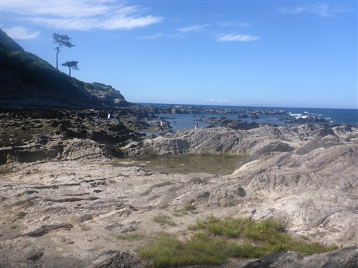
本日は快晴で、富士山がきれいに見えている。
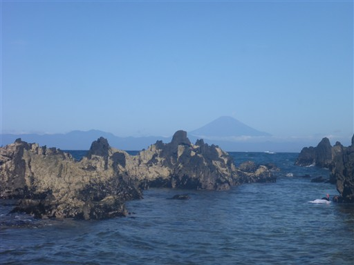
水の透明度はそこそこ良い。今年は暑い日が続いているので、水温もそこそこ高い。
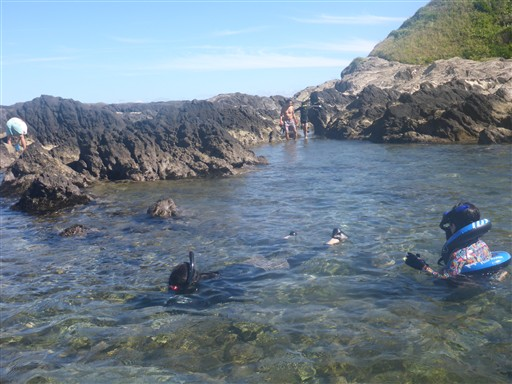
草地にテントを設置。
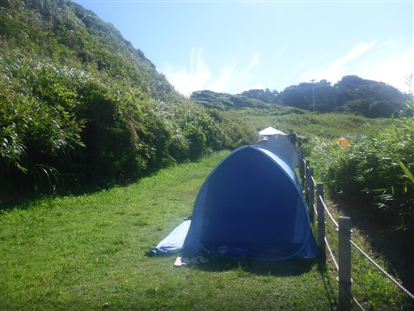
早速シュノーケリング開始。下の方にタカノハダイ。
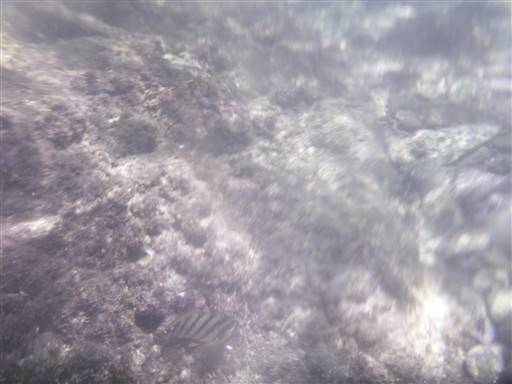
クサフグ。
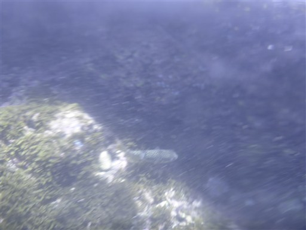
オヤビッチャの群れ。
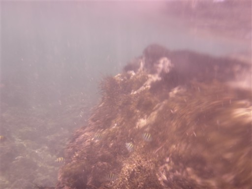
カゴカキダイ。
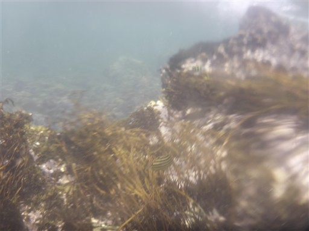
ソラスズメダイ。
毎回、見られる魚は同じだが、いろいろな魚がいて見ていて飽きない。

すごく見えにくいけれど、魚の群れ。
肉眼だと泳いでいる魚がたくさん見えるのだが…
これまで見たことの無い40cmくらいの大きな魚も見かける。
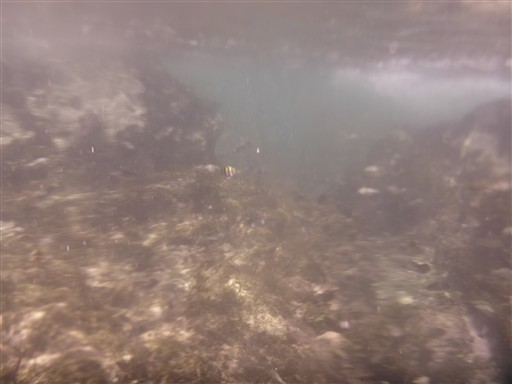
ウニが大量にいるゾーンもある。靴を履いていないと危ない。
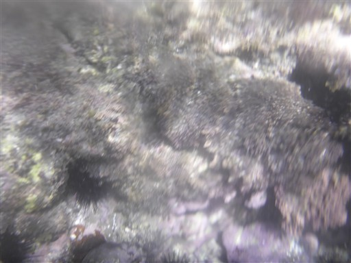
カニ。スルメで釣ろうとしたが、奪われてしまった。掴んだら離さない。
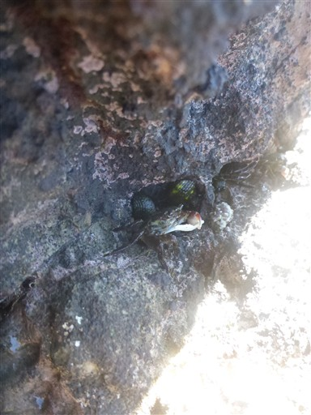
今日はヨットの数がやたら多い。ヨットが趣味の人がこんなにいるのか。
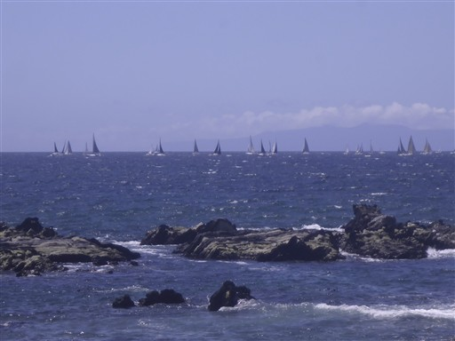
綺麗な貝殻を探す。
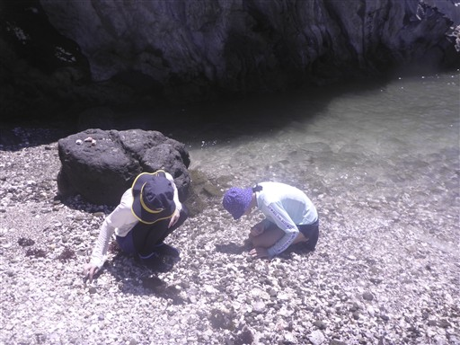
なぜかこの場所だけ大量に貝殻が堆積している。
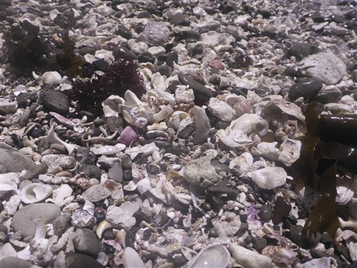
周辺は岩だらけ。
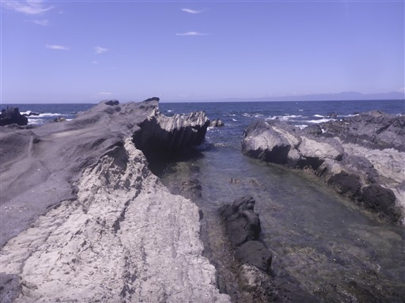
本日はものすごく波が高く、沖の方でのシュノーケリングは無理。
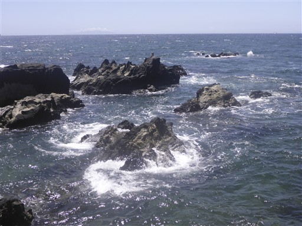
夕日の丘を見上げる。
シュノーケリングをしたり、浮き輪に乗って波に揺られたり、カニをとったり、貝殻を探したり
いろいろ海遊びを楽しむことができた。
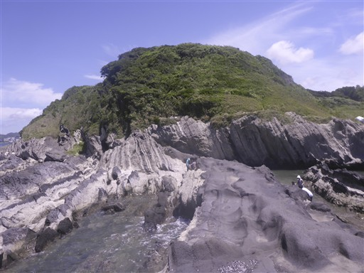
他の記録